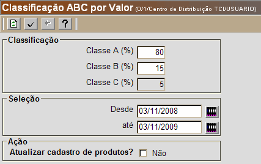

Classificação ABC por Valor [ Voltar ]Este formulário gera uma classificação ABC pelo valor dos produtos, o que permite ao gestor um maior conhecimento de quais são os produtos que representam maior custo dentro do estoque. Devido ao alto valor destes produtos, é importante dar a eles atenção especial e estar especialmente atento aos seus prazos de validade. O formulário "Classificação ABC por Valor" se encontra dentro do menu "Estoque". O sistema exibirá a seguinte tela:  Para gerar a classificação ABC dos produtos pelo valor, siga os passos abaixo: 1º Passo: informe a porcentagem das classes A, B e C. Na figura acima, na Classe A devem constar os produtos cujos preços representam 80% do valor total do estoque. De acordo com o exemplo, a Classe B deve incluir aqueles produtos cujo valor não é tão alto para constar na classe A, mas que apresentam um valor intermediário e representam 15% do valor total do estoque. O total da Classe C é definido pelos valores de A e B (o total de A, B e C deve somar 100) e se constitui dos produto de menor valor. 2° Passo: defina o período desejado para a
classificação ABC por quantidade de expedições. Clique no botão

3º Passo: informe se o cadastro dos produtos deve ser alterado em função desta classificação. 4º Passo: clique no botão |
 [Data] para selecionar as
datas desejadas ou:
[Data] para selecionar as
datas desejadas ou: